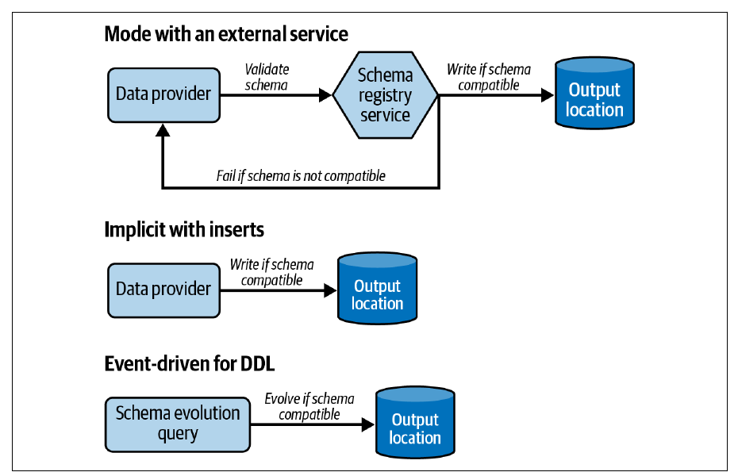

Chapter 9 · pp. 273–303
Data Quality Design Patterns
Data Engineering Design Patterns, 1st Edition
Trust is a key property of a dataset, and poor quality — incompleteness, inaccuracy, inconsistency — destroys it (p. 273). The chapter's six patterns fall into three groups. Quality enforcement keeps bad data from being exposed: Audit-Write-Audit-Publish (AWAP) adds audit steps on the input and on the transformed output before publishing, and the Constraints Enforcer delegates type, nullability, value and integrity rules to the database or format. Schema consistency: the Schema Compatibility Enforcer blocks breaking schema changes (backward, forward or full compatibility, transitive or not), and the Schema Migrator makes renames, type changes and removals possible through a grace period during which old and new fields coexist. Quality observation keeps the rules relevant as data evolves: the Offline Observer profiles datasets in a separate, nonblocking job, and the Online Observer puts observation inside the pipeline so issues surface right after generation.
The chapter’s own outline (from the book’s table of contents)
- Quality Enforcement — p. 274
- Pattern: Audit-Write-Audit-Publish — p. 274
- Pattern: Constraints Enforcer — p. 281
- Schema Consistency — p. 284
- Pattern: Schema Compatibility Enforcer — p. 284
- Pattern: Schema Migrator — p. 290
- Quality Observation — p. 293
- Pattern: Offline Observer — p. 293
- Pattern: Online Observer — p. 298
- Summary — p. 302
From the book
Introduction
Exchanging data is a mutual transaction: the goal is a happy producer and a happy consumer (p. 273). Enforcement prevents exposing bad data; schema patterns stop producers' schema changes from breaking pipelines; observation keeps today's rules valid for tomorrow's data (p. 273).
flowchart LR
E["Enforcement<br/>AWAP · Constraints"] --> S["Schema consistency<br/>Compatibility · Migrator"]
S --> O["Observation<br/>Offline · Online"]
O -. "new or updated rules" .-> EQuality enforcement
Pattern: Audit-Write-Audit-Publish
pp. 274–281Problem. Unique visitors in a daily statistics job dropped by 50% for a week; the product team launched a marketing campaign — then you found the aggregation was wrong. Prevent it happening again (p. 274).
Solution (pp. 274–277). AWAP extends Write-Audit-Publish (WAP), presented by Michelle Ufford at DataWorks Summit 2017 (“Whoops, the Numbers Are Wrong! Scaling Data Quality @ Netflix”), with a lightweight audit of the input (p. 274). Like unit-test assertions applied to real data flows:
flowchart LR
IN[("Input")] --> A1{"Audit 1: input<br/>format · size · schema"}
A1 -- ok --> T["Transform"] --> W[("Write to<br/>staging")] --> A2{"Audit 2: output<br/>nulls · volume · rules"}
A2 -- ok --> P[("Publish")]
A1 -- fail --> X["Stop / alert"]
A2 -- fail --> XAfter Figure 9-1 (p. 275).
| Audit | Typical checks | Example |
|---|---|---|
| Input | Fast: file format, file or table size, schema | Check a CSV has columns a, b, c from its first line — avoid reading the whole dataset twice |
| Output | Data-level, like unit tests on real data | Transformed columns are never NULL |
Similar-looking checks aren't redundant: a NULL check on the input tests the provider; on the output, it tests your transformation. If volume forces a choice, put the check where it's most exhaustive — the output catches nulls from both (pp. 275–276). Unit tests stay the first line of defence; audits extend them to real, evolving data (p. 276). Checks can be record-level or dataset-level (volume, distinctness, null proportion). Outcomes besides failure (pp. 276–277):
| Outcome | Behaviour |
|---|---|
| Fail | Stop the pipeline |
| Data dispatching | Promote valid rows; store invalid ones separately — like a Dead-Letter, but driven by explicit controls, not runtime errors |
| Nonblocking audit | Publish anyway, annotated with a data summary of issues so consumers judge trust |
In streaming (Figure 9-2), either window-based (audit processing-time windows inside the job) or staging-based (write to staging; a separate audit job promotes). The input audit usually disappears — the exhaustiveness rule again (p. 277).
Consequences (pp. 277–278): compute cost (metadata checks cheap, row checks expensive); rules coverage — today's rules may not cover tomorrow's data, so don't treat audited pipelines as 100% reliable (see the observers); streaming latency — e.g. waiting for a window to assess null distribution; an issue may not be an issue — being quoted on social media raises volume legitimately, so some failures should just alert.
Examples (pp. 278–280): an Airflow DAG next_partition_sensor >> audit_file_to_load >> transform_file >> audit_transformed_file >> load_flattened_visits_to_final_table; the input audit checks minimum size, minimum line count and invalid JSON lines and reports all errors at once; the output audit uses pandas isnull().any() over required columns (the CSV has no constraints — otherwise use the Constraints Enforcer). Streaming: Spark writes to a Delta staging table every 15 seconds (maxOffsetsPerTrigger 50); a second stream reads staging (maxBytesPerTrigger 20000000), adds is_valid, and every 30 seconds writes to the output or errors table.
Quality enforcement
Pattern: Constraints Enforcer
pp. 281–284Problem. A months-old batch job starts writing random NULLs in required fields; the job is complex enough already — make the load fail on quality errors without adding validation code (p. 281).
Solution (pp. 281–282): identify attributes needing rules (business- or law-driven, e.g. an order's amount and billing address), then declare constraints:
| Constraint | Meaning | Example |
|---|---|---|
| Type | Every value has the same type; the backbone of schema consistency | event_time TIMESTAMP |
| Nullability | Never or possibly missing; also tells consumers to filter | NOT NULL |
| Value | Allowed values or expressions | x <= NOW(), x BETWEEN 1901 AND 2000 |
| Integrity | References must exist (normalized models) | A visit's page must exist in pages |
Beyond databases: Delta Lake CHECK; Avro and Protobuf enforce types natively and values via extensions. Constraints are informative for consumers and interactive for producers (p. 282).
Consequences (pp. 282–283): all-or-nothing — one bad row rejects the whole insert, and databases often stop at the first error, so producers iterate (validating producer-side recovers the full list but loses the benefits); data producer shift — consumers may need stricter rules than the constraints; coverage — table formats may lack integrity constraints; AWAP rules are limited only by your language.
Examples (pp. 283–284): Delta visit_id STRING NOT NULL, event_time TIMESTAMP NOT NULL, plus CHECK (event_time < NOW() + INTERVAL "1 SECOND"); violations raise DELTA_VIOLATE_CONSTRAINT_WITH_VALUES or DELTA_NOT_NULL_CONSTRAINT_VIOLATED and nothing from the transaction is written. Protobuf + protovalidate: visit_id min_len = 5, event_time lt_now, required fields, and a CEL rule that page must not end with html; validate(…) raises ValidationError: invalid Visit.
Schema consistency
Pattern: Schema Compatibility Enforcer
pp. 284–290Problem. Your Stateful Sessionizer job failed many times last month: a new upstream team removed fields they thought obsolete. Make them unable to ship breaking changes (p. 285).
Solution (pp. 285–288). Three enforcement modes (Figure 9-3):


| Mode | How | Examples |
|---|---|---|
| External service or library | Producers and consumers talk to a registry that versions schemas and validates changes against a compatibility rule | Kafka Schema Registry; Avro SchemaValidator (no configurable rule) |
| Implicit with inserts | Table constraints reject nonconforming writes; no explicit mode | Table formats, relational databases |
| Event-driven for DDL | Event triggers run before DROP COLUMN/RENAME COLUMN and can roll back; or simply don't grant ALTER TABLE | PostgreSQL, SQL Server |
Compatibility modes (the book omits None, which enforces nothing) (pp. 286–287):
| Mode | Consumers can… | Allowed changes (Table 9-1) |
|---|---|---|
| Backward | with the new schema, read old data | Delete field, add optional field |
| Forward | with the old schema, read new data | Add field, delete optional field |
| Full | both | Add optional field, delete optional field |
Nontransitive modes compare consecutive versions; transitive modes compare against all past (or future) versions — the allowed actions are the same, but the scope differs (p. 287). The book's example (pp. 287–288):
| Version | Order schema |
|---|---|
| v0 | order_id LONG REQUIRED |
| v1 | + amount DOUBLE DEFAULT 0.0 (optional, backward compatible) |
| v2 | amount DOUBLE REQUIRED (default removed at the product team's request) |
v2 reading v1 data works — the default fills missing amounts — so it's nontransitively backward compatible; v2 can't read v0 data, so it breaks transitive backward compatibility.
Consequences (p. 288): interaction overhead — producers validate against the latest version; harder evolution — a rename may become “add a new field, deprecate the old” (the Schema Migrator).
Examples (pp. 288–290): a forward-compatible Avro Visit schema (visit_id string, event_time int) in Schema Registry; producing without visit_id fails with HTTP 409 READER_FIELD_MISSING_DEFAULT_VALUE — the old schema's field has no default and is missing. Delta Lake's implicit enforcement rejects a write adding ad_id with “A schema mismatch detected when writing to the Delta table”.
Try it
Schema compatibility checker
Open full screen ↗ · the simulation is the vault’s own model of the mechanism the book describes.
Schema consistency
Pattern: Schema Migrator
pp. 290–293Problem. Being consumer-friendly, you kept adding fields; visit events now have up to 60 attributes, scattered. Consumers want related ones grouped (e.g. login, email and age under user) without a sudden breaking change (p. 290).
Solution (pp. 290–291). Requires nontransitive compatibility — transitive modes would forbid any rename or removal (p. 290). Three evolutions:
| Evolution | Steps |
|---|---|
| Rename / type change | Add the new field → agree a transition period → send both → after the deadline, a version with only the new field |
| Removal | Easy only with a 100% guarantee no one uses it; otherwise find a substitute or cancel. Agree a removal period, then drop it |
Use the Fine-Grained Tracker (Ch. 10) to find who uses an attribute (p. 291).
flowchart LR
V1["v1: from_page"] --> V2["v2: from_page + referral<br/>(grace period, both populated)"] --> V3["v3: referral only<br/>(after consumers migrate)"]Consequences (pp. 291–292): size impact — duplicated fields cost storage, network and I/O. Protobuf's best practices warn against hundreds of fields: each, even unpopulated, takes at least 65 bytes and builders can hit Java compilation limits; Delta Lake collects statistics on the first 32 columns by default. Impossible removal when a consumer has no alternative.
Examples (pp. 292–293): a consumer runs INSERT INTO dedp.connected_users_visits SELECT … from_page FROM dedp.visits …; ALTER TABLE dedp.visits RENAME COLUMN from_page TO referral breaks it with ERROR: column "from_page" does not exist. Instead ALTER TABLE dedp.visits ADD COLUMN referral … and drop from_page once consumers adapt. Protobuf renames are safe on the wire (only tags are encoded), type changes may not be (p. 293).
From the book
Quality observation
Datasets change; rules valid today may not be tomorrow (p. 293).
Quality observation
Pattern: Offline Observer
pp. 293–298Problem. A new, well-enforced pipeline has few issues, but you know the upstream will evolve. Monitor value distributions and nulls per column without blocking the pipeline (p. 293).
Solution (pp. 293–294): a separate data observability job analyzes processed records and feeds the monitoring layer — distributions, nulls in nullable fields, new unprocessed input fields — possibly on its own schedule (e.g. nightly, to avoid contention). Observability vs auditing: an audit blocks; observability only detects (p. 294).
Consequences (p. 294): time accuracy — insight may arrive after consumers have used bad data; compute resources — observing hourly data once a day processes 24 hours at once; sampling helps but may miss observations.
Examples (pp. 294–298): an Airflow DAG wait_for_new_data >> record_new_observation_state >> insert_new_observations. The state step records the first and last row IDs after the previous run's last_row_id (for idempotent, consistent scope); the observation step counts all rows and invalid fields between them. In streaming, a Spark job's foreachBatch runs the same query, writes a ydata-profiling HTML report (ProfileReport(…, minimal=True), Figure 9-4), and computes lag per partition as the topic's last offset minus the producer job's last checkpointed offset.
Quality observation
Pattern: Online Observer
pp. 298–302Problem. Analysts found an unexpected zip code format from an upstream regression; your weekly Offline Observer saw it, but only after users did (p. 298).
Solution (pp. 298–299): make observation part of the data generation pipeline, so insight is available right after generation. In batch, place it after the Transform stage as a Parallel Split or a Local Sequencer step (Figure 9-5). In streaming, the observation logic lives inside the job — its errors or memory issues can affect the whole job; sampling reduces the risk at the cost of insight (Figure 9-6). Observability also covers technical metadata (CPU, memory, disk) (p. 300).
flowchart LR
T["Transform"] --> L["Load"]
T --> OP["Observe (parallel split)<br/>may miss load-time issues"]
L --> OS["Observe (local sequencer)<br/>sees what consumers see, adds delay"]After Figure 9-5 (p. 299).
Consequences (p. 300): extra delays with a Local Sequencer; with a Parallel Split, the observer may see a partially valid dataset — e.g. date times in an unexpected format go missing in the database, but the observer, reading the transformed data, doesn't notice. Prefer observing what's exposed to consumers.
Examples (pp. 300–302): the Airflow pipeline now includes copy_new_visits >> record_new_observation_state >> insert_new_observations, plus a final no-op task with trigger rule all_done so observation failures don't fail the pipeline. In streaming, the reader adds partition and offset columns; Spark accumulators collect max offsets per partition and invalid-field counts in one pass, aggregated on the driver when .value is read — avoiding reading the input twice.
From the book
Summary
Enforcement at the pipeline (AWAP), database (Constraints Enforcer) and schema (Schema Compatibility Enforcer) levels prevents publishing data that breaks known rules — but only known rules; observation (offline or online, trading time for accuracy) keeps the rules up to date (pp. 302–303).
Recap
Trade-offs at a glance
| AWAP | Constraints Enforcer | |
|---|---|---|
| Where rules live | Your pipeline code | Database / format |
| Flexibility | Any logic | Limited to supported constraints |
| Error reporting | All errors at once (if coded so) | Often first error, all-or-nothing |
| Outcomes | Fail, dispatch, annotate | Reject |
| Offline Observer | Online Observer | |
|---|---|---|
| Blocks pipeline | No | No (but can fail or slow it) |
| Timeliness | Late | Right after generation |
| Production impact | None | Extra step or shared resources |
Recap
Key takeaways
- Audit both sides: a cheap audit of the input (format, size, schema from the first line) and a data-level audit of the output; put an expensive check where it's most exhaustive (pp. 275–276).
- A failed audit needn't fail the pipeline: dispatch invalid rows, or publish with an annotation (nonblocking audit) (pp. 276–277).
- An “issue” may not be an issue — a viral post legitimately multiplies traffic; some audit failures should only alert (p. 278).
- Database constraints are declarative but all-or-nothing, often stopping at the first error, and they serve producers' view of quality, not every consumer's (pp. 282–283).
- Transitive compatibility checks against every past version, not just the previous one: v0 → v1 (add
amountwith a default) → v2 (make it required) is fine nontransitively but breaks transitively (pp. 287–288). - Rename = add, coexist, then remove: never
RENAME COLUMNin place under live consumers (pp. 291–292). - Observation is not auditing: observers never block; offline is late but cheap, online is timely but can slow or break the pipeline (pp. 294–300).
Practice
Check yourself
Questions and answers are the vault's, written from the notes above; answers cite the book's pages.
1You can afford one NULL check. Where should it go, and why?Show answer
In the output audit — it's the most exhaustive place, catching nulls from the provider and from your transformation (p. 276).
3A producer's batch has three invalid rows with different problems. Why might fixing them take several round-trips with a constrained database?Show answer
Constraints are all-or-nothing and databases often stop at the first error, so each attempt reveals one problem (p. 282).
5Why does the Schema Migrator require nontransitive compatibility?Show answer
Transitive modes guarantee compatibility with all versions, so no rename or removal could ever complete (p. 290).
6What's the risk of running the Online Observer as a parallel split next to the load step?Show answer
It observes the transformed data, not what consumers get — e.g. date times dropped by the database during loading go unnoticed (p. 300).
Supplement
Beyond the book
Vault supplement — not from the book.
- Open-source tools such as Great Expectations, Soda and dbt tests implement audit steps declaratively; the book's examples write them by hand to show the mechanism.
- Confluent Schema Registry's documented modes are exactly the book's list —
BACKWARD,BACKWARD_TRANSITIVE,FORWARD,FORWARD_TRANSITIVE,FULL,FULL_TRANSITIVE— plusNONE; its default isBACKWARD.
Next steps
Keep going
Connections
- Related chapters: 3. Error Management (Dead-Letter vs data dispatching), 5. Data Value (Stateful Sessionizer), 6. Data Flow (Parallel Split, Local Sequencer), 8. Data Storage (Normalizer and integrity constraints), 10. Data Observability (Fine-Grained Tracker, Flow Interruption Detector).